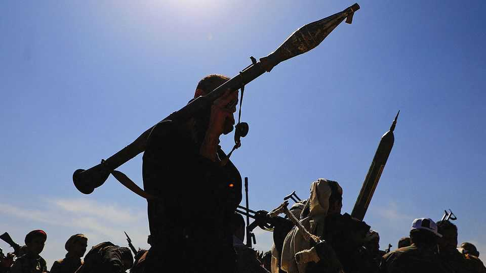
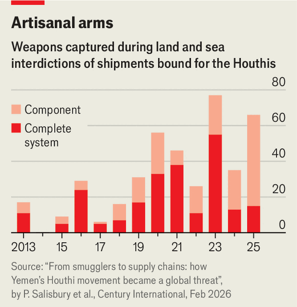

How the Houthis built their war machine
The rebels in Yemen are outgrowing their dependence on their patron

Nov 5th 2026
ALI AL-WAZIR is no ordinary businessman. The 47-year-old Yemeni, who is known as “Prince”, plies his trade in Guangzhou in southern China. The bustling port is about 7,000km (4,500 miles) from Yemen. But distance has not prevented Mr Wazir from playing a part in his country’s long civil war. In 2024 he was accused of supplying the Houthis, the Iran-backed rebels that rule much of Yemen, with materials to help them build weapons. America’s Treasury placed him under sanctions. Last year it blacklisted several more Houthi-linked traders for doing the same.
Once dismissed as ragtag insurgents—rebels in flipflops—the Houthis are now one of the most dangerous militias in the Middle East. Since they took control of northern Yemen more than a decade ago, they have built up a formidable arsenal of drones and missiles—aided, in part, by the likes of Mr Wazir. The Houthis’ smuggling networks stretch from the Horn of Africa to China. In recent weeks they have hit Saudi Arabia, which supports Yemen’s internationally recognised government, with one strike after another. At a summit in Tehran last week Saudi Arabia put pressure on Iran to rein in the Houthis but the region is preparing for more war.
The Houthis first got their hands on serious kit in 2014 after they seized Sana’a, Yemen’s capital. A short-lived alliance with Ali Abdullah Saleh, a former president, and his loyalists in the army gave them access to Soviet-style Scud and Tochka missiles. At the same time Iran, which was cultivating the Houthis (also Shia) as part of its “axis of resistance”, increased its support. When Saudi forces intervened in Yemen in 2015, Iran supplied the rebels with ballistic missiles, drones and other heavy weapons. Iranian advisers and operatives from Hizbullah, a militia in Lebanon, taught them how to use them.
Today the Houthis are developing a war machine of their own. On September 21st Abdul-Malik al-Houthi, their leader, boasted that they now build their weapons “from scratch”. That may be bluster but analysts are increasingly convinced that much of the rebels’ arsenal is built inside Yemen. “The speed and ambition of the Houthis’ military production has surprised a lot of observers,” says Fabian Hinz of Conflict Armaments Research (CAR), which tracks the illicit arms trade. While most of the group’s weapons are still based on Iranian designs, some—such as medium-range drones—can be built largely without Iranian parts.

Production mostly happens out of sight, in caves in the Yemeni highlands, making it hard to monitor. Data from The Century Foundation, a think-tank in New York, nevertheless point to a shift in their activities (see chart). During the 2010s most of the shipments that were seized going into Houthi territory contained ready-to-use weapons, such as guns and rockets. Iran was by far the biggest supplier in the mid-2010s. Now most of these consignments contain parts to build weapons, such as motors, wiring and propellers. China has overtaken Iran as the biggest source of such goods.
Lots of these items are “dual-use”, meaning they plausibly have civilian as well as military applications. Houthi smugglers sometimes try to outfox Yemeni authorities by slapping innocuous labels such as “industrial equipment” on drone kits. Other goods seem purpose-made for the arms industry. In October CAR suggested that parts for an Iranian-designed ballistic missile, seized in the government-held port of Aden, were made to order by a Chinese company. Saudi officials have complained to China, to little avail. “China is happy to turn a blind eye to its citizens participating in trade that supports the Houthis’ weapons industry,” says a Western diplomat.
Breaking this supply chain will be hard. American sanctions have achieved little: Houthi businessmen continue to operate in China. The rebels have been under a United Nations’ arms embargo for more than a decade. But the mission that inspects cargo ships sailing to Houthi-held ports is feeble. It reports dodgy vessels to the Saudis and their allies, but has no powers to stop them itself.
Even if it could, much would slip through. Some goods travel overland through the United Arab Emirates and Oman. Others are smuggled via Djibouti and Somalia. Tim Lenderking, America’s envoy for Yemen from 2021 to 2025, says the Houthis move contraband “from big boats, onto small boats, onto tiny boats, onto pack animals and onto people’s backs”. Smugglers hide ammunition in lorries carrying fruit and vegetables. Yemen’s government—a patchwork of squabbling groups—struggles to co-ordinate enforcement. “Different operation rooms are controlled by different factions,” says Baraa Shiban of the Royal United Services Institute, a think-tank in London. “It’s a nightmare.”
Making their own arms helps the Houthis keep fighting when supplies from Iran are disrupted. But the Islamic Republic also benefits from their self-reliance. Under its doctrine of “mosaic defence”, Iran’s regime has tried to make different parts of its armed forces capable of fighting independently. A similar idea underpins its axis of resistance. “Iran has made efforts to enable its allies to produce locally,” says Mr Hinz. Hizbullah has built drones and tried to convert rockets into precision-guided missiles by itself. But the militia has been weakened by Israeli attacks and disruption to its smuggling routes through Syria since the fall of Bashar al-Assad.
The Houthis are in a better position. While the rebels still get plenty of weapons and intelligence from Iran, they are outgrowing their dependence on the regime. That may explain why the Houthis are unbowed even as the war launched by America and Israel has weakened their patron. The rebels see themselves as more than a mere Iranian proxy but as the real rulers of Yemen. They have sought support from Russia and are fostering connections with armed groups in Africa. The Houthis want to be a “little Iran in their own little neighbourhood,” says Barbara Leaf, a former American diplomat. Their ambition, as well as their firepower, is growing.■